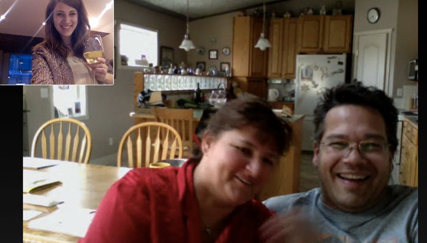

The last day. Proud day.
Wednesday, April 18, 2012
You know that feeling... when you have worked so hard on something.. for so long... and it finally comes to an end, you can’t decide if you are happy or sad?
That is how I am feeling today.
Words truthfully can’t express my gratitude for the adventure and education I’ve received in the last 6 months. There is so much to share and discuss I often don’t know where to start.
My last day at Beyond The Rack (BTR) was this past Sunday and it was a very emotional day for me. I was the Sample Sale Manager for an event that attracted a few thousand people in just 4 days. What made the experience unique was a lot of the work I did was independent from the office and focused outside of BTR’s daily operations. I was responsible for managing several employees and had a leading voice in the decisions that were made in regards to the event.
Having that opportunity opened my eyes. I realized how much I value being able to contribute to discussions and approach my work in a more hands on manner. My bosses were nothing but supportive in my growth as a leader. They encouraged me to take initiative.. but also let me learn from my mistakes (which is hard to do when you are trying to impress people..) Looking back, working a week in a company is very different - its difficult to take chances and learn from your mistakes in such a short period of time.... I have been in Montreal now for 4 weeks and watched the project go from start to finish. It was so rewarding to actually build something and be there to see the impact it had.
I got my 10th job offer today - which I honestly feel so blessed to have. I am elated and grateful to be recognized for my work [ See Dad, I do listen 10/10 :) ] and feel so lucky to be given the chance to show some complete strangers, who I admire what they are doing... what I am capable of contributing. I aspire to continue my growth as a young business leader and look forward to repaying the kindness that was so generously shared with me.
Every day is an opportunity to learn and to become better at what you do. I have some big decisions to make in the next few weeks and I know for a fact I am going to make some mistakes. They won’t be regrets... because I know it is simply a step in a new direction.
I’m excited for what comes next and will be sure to share my final decision. Thank you for being apart of this adventure with me. I am truly grateful to have you.
Much <3
Just Maeghan.
Ps. I also want to take a second and recognized someone who has been with me since day one - Patrick Lor
He gave me the confidence to be the person I have been trying to be. Pat, I know this project would not have been possible with out you. You believed in me and kept my arms in the air reaching for the stars. Thank you for being my mentor, my friend and #1 fan.
I appreciate you and all you do.


For my mom & dad. Thank you for believing in me and supporting all I do.
I love you.